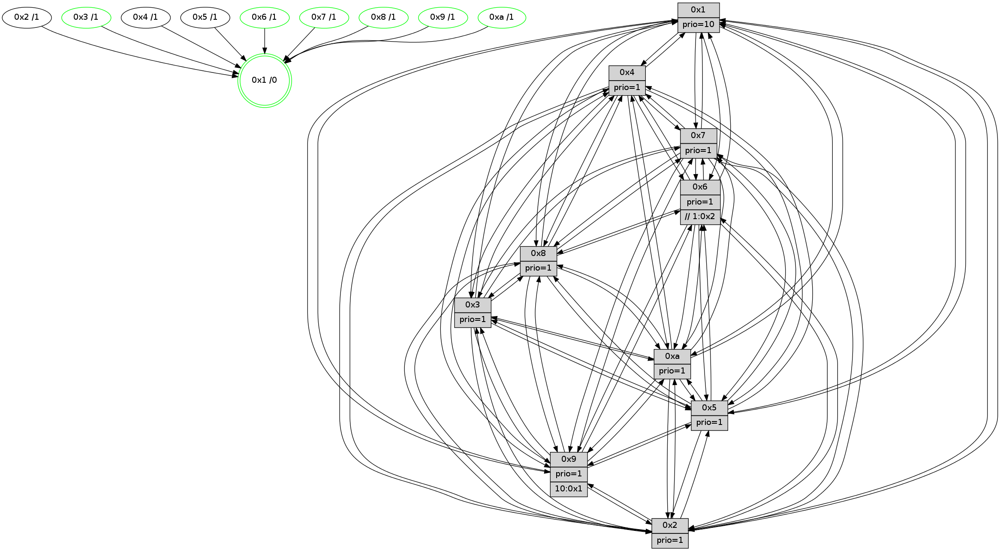

>> << IDX [start] -100 -25 -5 +0 +5 +25 [1575.11427808]
 Previous packets
----------------------------------------------------------------------
1570.385491 beacon01(faad) #0 coord=01,02,03,04,05,06,07,0a,09,08 cycle=688.0ms assoc
-- color-indic=1 64 43 a7
1570.395474 beacon02(faad) #0 coord=01,02,03,04,05,06,07,0a,09,08 cycle=688.0ms assoc 64 d0 96
1570.405475 beacon03(faad) #0 coord=01,02,03,04,05,06,07,0a,09,08 cycle=688.0ms assoc 64 aa db
1570.415473 beacon04(faad) #0 coord=01,02,03,04,05,06,07,0a,09,08 cycle=688.0ms assoc 64 dd 31
1570.425473 beacon05(faad) #0 coord=01,02,03,04,05,06,07,0a,09,08 cycle=688.0ms assoc 64 a7 7c
1570.435474 beacon06(faad) #0 coord=01,02,03,04,05,06,07,0a,09,08 cycle=688.0ms assoc 64 29 ab
1570.445475 beacon07(faad) #0 coord=01,02,03,04,05,06,07,0a,09,08 cycle=688.0ms assoc 64 53 e6
1570.455478 beacon0a(faad) #0 coord=01,02,03,04,05,06,07,0a,09,08 cycle=688.0ms assoc 64 22 ed
1570.475482 beacon08(faad) #0 coord=01,02,03,04,05,06,07,0a,09,08 cycle=688.0ms assoc 64 d6 77
1570.486397 [Hello(1): seq=910 sym=4,2,9,5,10,3,8,6,7 sysInfo=coloring-mode-on,ColoringModeRequestCalled stat=4:6,6,12,5/2:10,2,5,7/9:15,8,7,4/5:3,10,14,11/10:9,14,0,9/3:6,10,15,13/8:1,8,6,8/6:0,5,10,5/7:7,4,15,3]
1570.489121 [Hello(2): seq=997 sym=4,5,7,6,3,9,8,10,1 sysInfo=hasWarning stat=4:0,7,10,0/5:4,0,14,4/7:3,8,2,4/6:5,6,1,0/3:11,13,4,0/9:10,14,7,11/8:10,8,9,1/10:10,15,7,14/1:7,2,12,0]
1570.492792 [Hello(6): seq=1001 sym=2,5,4,7,9,8,10,1 sysInfo=hasWarning stat=2:6,13,6,1/5:13,13,2,6/4:13,1,10,11/7:15,9,12,2/9:0,14,15,12/8:1,1,6,11/10:5,13,8,0/1:1,5,2,1]
1570.495169 [STC(8)->1 #0.283 tree-change,inconsistent-stability,stable,to-color d=1]
1570.497073 [Hello(5): seq=1001 sym=7,6,4,2,1,9,8,10,3 sysInfo=hasWarning stat=7:11,8,3,2/6:10,12,2,2/4:6,0,6,1/2:7,6,1,0/1:12,3,12,0/9:0,7,14,13/8:14,9,9,9/10:9,3,2,12/3:10,15,3,0]
1570.505493 [STC(9)->1 #0.283 tree-change,inconsistent-stability,to-color d=1]
1570.507271 [Color(3) seq=630 @0:0 prio=1]
1570.508909 [Color(8) seq=588 @0:0 prio=1]
1570.510903 [STC(2)->1 #0.283 tree-change,inconsistent-stability,to-color d=1]
1570.516328 [TreeStatus(5)-.->1 #0.283 tree-change,inconsistent-stability,stable child=1]
----------------------------------------------------------------------
1571.173621 beacon01(faad) #0 coord=01,02,03,04,05,06,07,0a,09,08 cycle=688.0ms assoc
-- color-indic=1 64 ff a2
1571.183604 beacon02(faad) #0 coord=01,02,03,04,05,06,07,0a,09,08 cycle=688.0ms assoc 64 6c 93
1571.193604 beacon03(faad) #0 coord=01,02,03,04,05,06,07,0a,09,08 cycle=688.0ms assoc 64 16 de
1571.203604 beacon04(faad) #0 coord=01,02,03,04,05,06,07,0a,09,08 cycle=688.0ms assoc 64 61 34
1571.213603 beacon05(faad) #0 coord=01,02,03,04,05,06,07,0a,09,08 cycle=688.0ms assoc 64 1b 79
1571.223604 beacon06(faad) #0 coord=01,02,03,04,05,06,07,0a,09,08 cycle=688.0ms assoc 64 95 ae
1571.233605 beacon07(faad) #0 coord=01,02,03,04,05,06,07,0a,09,08 cycle=688.0ms assoc 64 ef e3
1571.243609 beacon0a(faad) #0 coord=01,02,03,04,05,06,07,0a,09,08 cycle=688.0ms assoc 64 9e e8
1571.263610 beacon08(faad) #0 coord=01,02,03,04,05,06,07,0a,09,08 cycle=688.0ms assoc 64 6a 72
1571.275463 [Hello(8): seq=945 sym=5,2,3,7,9,6,4,10,1 sysInfo=hasWarning stat=5:13,1,8,4/2:5,0,4,14/3:7,8,8,6/7:12,4,3,1/9:11,0,9,7/6:3,8,5,3/4:7,11,14,3/10:2,14,15,6/1:2,4,4,0]
1571.278512 [Hello(10): seq=934 sym=6,2,3,8,7,5,9,4,1 sysInfo=hasWarning stat=6:13,15,14,7/2:6,9,0,2/3:12,9,7,15/8:11,7,3,7/7:1,6,15,11/5:12,13,7,4/9:13,5,3,1/4:2,0,11,5/1:7,10,0,1]
1571.281201 [Hello(7): seq=1001 sym=2,3,5,6,8,4,9,10,1 sysInfo=hasWarning stat=2:11,3,12,6/3:13,5,1,6/5:14,13,14,6/6:6,5,13,15/8:6,14,5,2/4:10,14,4,2/9:0,8,7,4/10:0,1,0,0/1:12,2,13,0]
1571.284673 [Color(7) seq=508 @0:0 prio=1]
1571.288799 [Hello(9): seq=945 sym=2,5,3,4,7,6,8,10,1 sysInfo=hasWarning stat=2:5,5,1,13/5:8,9,8,1/3:5,4,14,7/4:13,0,8,5/7:3,1,1,1/6:4,15,14,3/8:15,12,9,10/10:13,12,10,1/1:4,0,2,1]
1571.295345 [Color(10) seq=578 @0:0 prio=1]
1571.297248 [Color(1) seq=681 @0:0 prio=10]
----------------------------------------------------------------------
1571.961750 beacon01(faad) #0 coord=01,02,03,04,05,06,07,0a,09,08 cycle=688.0ms assoc
-- color-indic=1 64 cb ba
1571.971732 beacon02(faad) #0 coord=01,02,03,04,05,06,07,0a,09,08 cycle=688.0ms assoc 64 58 8b
1571.981732 beacon03(faad) #0 coord=01,02,03,04,05,06,07,0a,09,08 cycle=688.0ms assoc 64 22 c6
1571.991732 beacon04(faad) #0 coord=01,02,03,04,05,06,07,0a,09,08 cycle=688.0ms assoc 64 55 2c
1572.001733 beacon05(faad) #0 coord=01,02,03,04,05,06,07,0a,09,08 cycle=688.0ms assoc 64 2f 61
1572.011732 beacon06(faad) #0 coord=01,02,03,04,05,06,07,0a,09,08 cycle=688.0ms assoc 64 a1 b6
1572.021733 beacon07(faad) #0 coord=01,02,03,04,05,06,07,0a,09,08 cycle=688.0ms assoc 64 db fb
1572.031736 beacon0a(faad) #0 coord=01,02,03,04,05,06,07,0a,09,08 cycle=688.0ms assoc 64 aa f0
1572.041738 beacon09(faad) #0 coord=01,02,03,04,05,06,07,0a,09,08 cycle=688.0ms assoc 64 24 27
1572.051739 beacon08(faad) #0 coord=01,02,03,04,05,06,07,0a,09,08 cycle=688.0ms assoc 64 5e 6a
1572.062964 [Hello(5): seq=1002 sym=7,6,4,2,1,9,8,10,3 sysInfo=hasWarning stat=7:12,8,3,2/6:10,12,2,2/4:7,0,6,1/2:7,6,1,0/1:13,4,12,0/9:1,7,14,13/8:15,9,9,9/10:10,4,2,12/3:10,15,3,0]
1572.065932 [Hello(2): seq=998 sym=4,5,7,6,3,9,8,10,1 sysInfo=hasWarning stat=4:0,7,10,0/5:4,0,14,5/7:4,9,2,4/6:5,6,1,0/3:11,13,4,0/9:11,14,7,11/8:11,8,9,1/10:11,0,7,14/1:8,3,12,0]
1572.070577 [Hello(3): seq=1002 sym=1,7,6,2,4,8,9,10,5 sysInfo=hasWarning stat=1:1,4,6,0/7:2,6,2,1/6:1,5,0,0/2:10,8,2,0/4:0,10,2,0/8:8,7,11,10/9:10,7,11,2/10:15,13,1,7/5:7,15,8,4]
1572.074353 [Color(3) seq=631 @0:0 prio=1]
1572.075738 [Hello(1): seq=911 sym=4,2,9,5,10,3,8,6,7 sysInfo=coloring-mode-on,ColoringModeRequestCalled stat=4:6,6,12,5/2:11,2,6,7/9:15,8,8,4/5:4,10,14,12/10:9,14,0,9/3:7,11,0,13/8:2,9,7,8/6:1,5,10,5/7:7,4,15,3]
1572.078502 [Color(6) seq=634 @0:0 prio=1 >>1.@2,1.@3,1.@4]
1572.082238 [Color(8) seq=589 @0:0 prio=1]
----------------------------------------------------------------------
1572.749882 beacon01(faad) #0 coord=01,02,03,04,05,06,07,0a,09,08 cycle=688.0ms assoc
-- color-indic=1 64 77 bf
1572.759864 beacon02(faad) #0 coord=01,02,03,04,05,06,07,0a,09,08 cycle=688.0ms assoc 64 e4 8e
1572.769864 beacon03(faad) #0 coord=01,02,03,04,05,06,07,0a,09,08 cycle=688.0ms assoc 64 9e c3
1572.779864 beacon04(faad) #0 coord=01,02,03,04,05,06,07,0a,09,08 cycle=688.0ms assoc 64 e9 29
1572.789866 beacon05(faad) #0 coord=01,02,03,04,05,06,07,0a,09,08 cycle=688.0ms assoc 64 93 64
1572.799864 beacon06(faad) #0 coord=01,02,03,04,05,06,07,0a,09,08 cycle=688.0ms assoc 64 1d b3
1572.809866 beacon07(faad) #0 coord=01,02,03,04,05,06,07,0a,09,08 cycle=688.0ms assoc 64 67 fe
1572.819868 beacon0a(faad) #0 coord=01,02,03,04,05,06,07,0a,09,08 cycle=688.0ms assoc 64 16 f5
1572.839870 beacon08(faad) #0 coord=01,02,03,04,05,06,07,0a,09,08 cycle=688.0ms assoc 64 e2 6f
1572.851984 [Hello(9): seq=946 sym=2,5,3,4,7,6,8,10,1 sysInfo=hasWarning stat=2:6,5,1,13/5:9,9,8,1/3:6,5,14,7/4:13,0,8,5/7:3,1,1,1/6:4,0,14,3/8:15,13,9,10/10:13,13,10,1/1:5,1,2,1]
1572.854724 [Color(5) seq=527 @0:0 prio=1]
1572.856300 [Color(1) seq=682 @0:0 prio=10]
1572.860737 [Hello(7): seq=1002 sym=2,3,5,6,8,4,9,10,1 sysInfo=hasWarning stat=2:12,3,12,6/3:13,6,1,6/5:15,13,14,6/6:7,6,13,15/8:7,15,5,2/4:10,14,4,2/9:1,8,7,4/10:0,2,0,0/1:13,3,13,0]
1572.863850 [Hello(8): seq=946 sym=5,2,3,7,9,6,4,10,1 sysInfo=hasWarning stat=5:14,1,8,4/2:5,0,4,14/3:7,8,8,6/7:13,5,3,1/9:12,0,9,7/6:3,8,5,3/4:7,11,14,3/10:3,15,15,6/1:2,5,4,0]
1572.866474 [Hello(4): seq=1002 sym=5,8,6,2,3,9,7,10,1 sysInfo=hasWarning stat=5:12,14,13,5/8:11,11,3,0/6:2,2,9,4/2:4,9,15,3/3:10,8,7,1/9:4,8,15,4/7:12,2,3,1/10:4,0,7,0/1:13,12,0,1]
1572.869602 [Color(7) seq=509 @0:0 prio=1]
1572.874351 [Hello(10): seq=935 sym=6,2,3,8,7,5,9,4,1 sysInfo=hasWarning stat=6:14,0,14,7/2:7,9,0,2/3:12,10,7,15/8:12,8,3,7/7:1,6,15,11/5:13,13,7,4/9:13,5,3,1/4:2,0,11,5/1:8,11,0,1]
1572.878777 [Color(10) seq=579 @0:0 prio=1]
----------------------------------------------------------------------
1573.538014 beacon01(faad) #0 coord=01,02,03,04,05,06,07,0a,09,08 cycle=688.0ms assoc
-- color-indic=1 64 b3 b1
1573.547996 beacon02(faad) #0 coord=01,02,03,04,05,06,07,0a,09,08 cycle=688.0ms assoc 64 20 80
1573.557996 beacon03(faad) #0 coord=01,02,03,04,05,06,07,0a,09,08 cycle=688.0ms assoc 64 5a cd
1573.567997 beacon04(faad) #0 coord=01,02,03,04,05,06,07,0a,09,08 cycle=688.0ms assoc 64 2d 27
1573.577997 beacon05(faad) #0 coord=01,02,03,04,05,06,07,0a,09,08 cycle=688.0ms assoc 64 57 6a
1573.587997 beacon06(faad) #0 coord=01,02,03,04,05,06,07,0a,09,08 cycle=688.0ms assoc 64 d9 bd
1573.597997 beacon07(faad) #0 coord=01,02,03,04,05,06,07,0a,09,08 cycle=688.0ms assoc 64 a3 f0
1573.608001 beacon0a(faad) #0 coord=01,02,03,04,05,06,07,0a,09,08 cycle=688.0ms assoc 64 d2 fb
1573.618003 beacon09(faad) #0 coord=01,02,03,04,05,06,07,0a,09,08 cycle=688.0ms assoc 64 5c 2c
1573.628003 beacon08(faad) #0 coord=01,02,03,04,05,06,07,0a,09,08 cycle=688.0ms assoc 64 26 61
1573.640774 [Hello(2): seq=999 sym=4,5,7,6,3,9,8,10,1 sysInfo=hasWarning stat=4:1,7,10,0/5:4,1,14,5/7:5,10,2,4/6:5,7,1,0/3:11,14,4,0/9:12,14,7,11/8:12,9,9,1/10:12,1,7,14/1:9,4,12,0]
1573.644164 [Hello(3): seq=1003 sym=1,7,2,4,8,9,10,5 sysInfo=hasWarning stat=1:2,5,6,0/7:3,7,2,1/2:11,8,2,0/4:1,10,2,0/8:9,8,11,10/9:11,7,11,2/10:0,14,1,7/5:8,0,8,4]
1573.646938 [Hello(6): seq=1003 sym=2,5,4,7,9,8,10,1 sysInfo=hasWarning stat=2:8,13,7,1/5:14,14,2,7/4:14,1,10,11/7:1,11,12,2/9:2,14,15,12/8:3,3,6,11/10:7,15,8,0/1:2,7,2,1]
1573.649646 [STC(1) #0.284 tree-change,inconsistent-stability,stable,to-color d=0]
1573.652977 [Color(6) seq=635 @0:0 prio=1 >>1.@2,1.@3,1.@4]
1573.655419 [Color(8) seq=590 @0:0 prio=1]
1573.657839 [Color(3) seq=632 @0:0 prio=1]
1573.661831 [Hello(5): seq=1003 sym=7,6,4,2,1,9,8,10,3 sysInfo=hasWarning stat=7:13,9,3,2/6:10,13,2,2/4:8,0,6,1/2:8,6,1,0/1:14,5,12,0/9:2,7,14,13/8:0,10,9,9/10:11,5,2,12/3:10,0,3,0]
----------------------------------------------------------------------
1574.326146 beacon01(faad) #0 coord=01,02,03,04,05,06,07,0a,09,08 cycle=688.0ms assoc
-- color-indic=1 64 0f b4
1574.336130 beacon02(faad) #0 coord=01,02,03,04,05,06,07,0a,09,08 cycle=688.0ms assoc 64 9c 85
1574.346129 beacon03(faad) #0 coord=01,02,03,04,05,06,07,0a,09,08 cycle=688.0ms assoc 64 e6 c8
1574.356129 beacon04(faad) #0 coord=01,02,03,04,05,06,07,0a,09,08 cycle=688.0ms assoc 64 91 22
1574.366130 beacon05(faad) #0 coord=01,02,03,04,05,06,07,0a,09,08 cycle=688.0ms assoc 64 eb 6f
1574.376130 beacon06(faad) #0 coord=01,02,03,04,05,06,07,0a,09,08 cycle=688.0ms assoc 64 65 b8
1574.386130 beacon07(faad) #0 coord=01,02,03,04,05,06,07,0a,09,08 cycle=688.0ms assoc 64 1f f5
1574.396137 beacon0a(faad) #0 coord=01,02,03,04,05,06,07,0a,09,08 cycle=688.0ms assoc 64 6e fe
1574.416135 beacon08(faad) #0 coord=01,02,03,04,05,06,07,0a,09,08 cycle=688.0ms assoc 64 9a 64
1574.427702 [STC(2)->1 #0.284 tree-change,inconsistent-stability,to-color d=1]
1574.430343 [Hello(8): seq=947 sym=5,2,3,7,9,6,4,10,1 sysInfo=hasWarning stat=5:15,1,8,4/2:6,0,4,14/3:7,9,8,6/7:13,6,3,1/9:12,0,9,7/6:3,8,5,3/4:8,11,14,3/10:4,0,15,6/1:2,5,4,0]
1574.433061 [Hello(7): seq=1003 sym=2,3,5,6,8,4,9,10,1 sysInfo=hasWarning stat=2:13,3,12,6/3:14,7,1,6/5:0,13,14,6/6:8,7,13,15/8:7,0,5,2/4:10,14,4,2/9:2,8,7,4/10:1,3,0,0/1:13,3,14,0]
1574.435758 [Color(1) seq=683 @0:0 prio=10]
1574.437106 [Color(5) seq=528 @0:0 prio=1]
1574.442333 [Hello(4): seq=1003 sym=5,8,6,2,3,9,7,10,1 sysInfo=hasWarning stat=5:13,14,13,5/8:11,12,3,0/6:3,3,9,4/2:5,9,15,3/3:11,9,7,1/9:4,8,15,4/7:12,3,3,1/10:5,1,7,0/1:13,12,1,1]
1574.445495 [STC(4)->1 #0.284 tree-change,inconsistent-stability,to-color d=1]
1574.447053 [Hello(9): seq=947 sym=2,5,3,4,7,6,8,10,1 sysInfo=hasWarning stat=2:7,5,1,13/5:10,10,8,1/3:7,6,14,7/4:14,0,8,5/7:4,2,1,1/6:5,1,14,3/8:0,14,9,10/10:14,14,10,1/1:5,2,3,1]
1574.451162 [STC(9)->1 #0.284 tree-change,inconsistent-stability,stable,to-color d=1]
1574.452621 [STC(7)->1 #0.284 tree-change,inconsistent-stability,stable,to-color d=1]
1574.454772 [Hello(10): seq=936 sym=6,2,3,8,7,5,9,4,1 sysInfo=hasWarning stat=6:15,1,14,7/2:7,9,0,2/3:13,11,7,15/8:12,9,3,7/7:1,6,15,11/5:14,13,7,4/9:14,5,3,1/4:2,0,11,5/1:9,11,1,1]
1574.458302 [TreeStatus(9)-.->1 #0.284 tree-change,inconsistent-stability,stable child=1]
1574.460915 [STC(10)->1 #0.284 tree-change,inconsistent-stability,stable,to-color d=1]
1574.464477 [Color(10) seq=580 @0:0 prio=1]
1574.468600 [Color(7) seq=510 @0:0 prio=1]